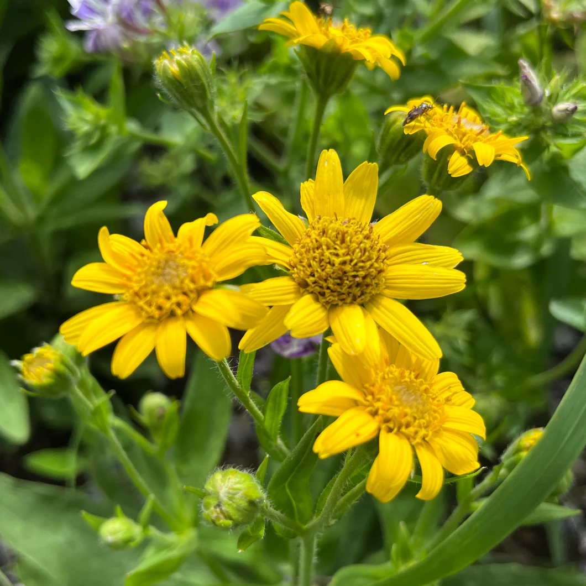

Ayuntamiento de Senés
JARDIN BOTANICO DE ESPECIES AUTOCTONAS DE SENES

Arnica montana

El árnica (Arnica montana) es una planta herbácea perenne conocida por sus propiedades medicinales y su característica floración amarilla. Aunque es más frecuente en zonas montañosas y praderas de clima templado, se ha convertido en una de las especies más valoradas dentro de la medicina tradicional europea.
Presenta un porte erguido, alcanzando entre 20 y 60 cm de altura. Sus hojas son ovaladas, dispuestas en roseta basal, y ligeramente rugosas. Sus flores, de color amarillo intenso, recuerdan a pequeñas margaritas y destacan por su viveza en el paisaje.
El árnica se distribuye principalmente por Europa, especialmente en zonas montañosas, praderas y claros de bosque con suelos ácidos y bien drenados. Prefiere climas frescos y húmedos, siendo menos común en regiones mediterráneas secas.
En el contexto de la Sierra de los Filabres, su presencia natural es limitada, pero su importancia radica en su valor medicinal y en su conocimiento dentro de la tradición botánica.
El árnica es una de las plantas medicinales más conocidas por sus propiedades antiinflamatorias y analgésicas. Se utiliza principalmente en aplicaciones externas para tratar golpes, contusiones, hematomas y dolores musculares.
Contiene compuestos activos como las lactonas sesquiterpénicas, que le confieren sus efectos terapéuticos. Su uso debe ser exclusivamente tópico, ya que su ingesta puede resultar tóxica.
El árnica simboliza la curación y la protección, siendo una planta asociada al alivio del dolor y al cuidado del cuerpo. Su uso tradicional la vincula con el conocimiento ancestral de las plantas medicinales.
También representa la fuerza de la naturaleza en entornos de montaña, donde crece en condiciones exigentes.
En Senés, la árnica, se denominaba tambien "tabaco de montaña". Se utilizaba principalmente en forma de preparados para aliviar golpes y dolores musculares. Tambien se usaba para enjuagues de boca para curar la piorrea.
Se fumaban sus hojas para tratarse los problemas respiratorios. Las embarazadas nunca las utilizaban.
El árnica florece entre finales de primavera y verano, produciendo flores amarillas que destacan en praderas y zonas abiertas de montaña.
El árnica ha sido utilizada desde la antigüedad en la medicina tradicional europea, siendo una de las plantas más reconocidas en el tratamiento de lesiones externas.
Actualmente, es muy utilizada en productos farmacéuticos y cosméticos, especialmente en cremas y geles para el cuidado muscular.